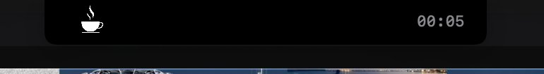
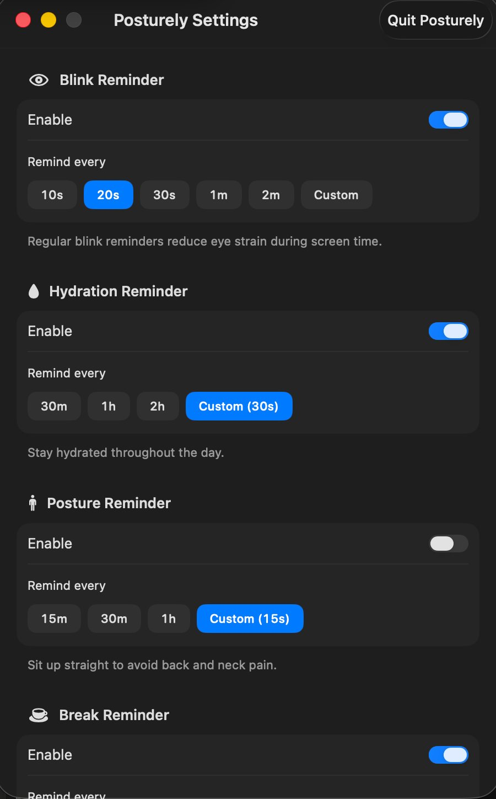

Gentle reminders for posture, hydration, blinking, and breaks — delivered exactly where your eyes already are.
completely free · no account · macOS 13+
No banners. No popups. No noise. A gentle nudge, exactly where you're already looking.
Posturely integrates directly into your MacBook notch — the one place your eyes always travel. No separate window, no dock badge, no interruption to your flow. It expands softly with a reminder, then disappears.

Posture checks, blink reminders, hydration nudges, and break prompts — each independently configurable, so it fits around your schedule.
Smooth system-level animations, zero latency, no Electron overhead. Posturely doesn't feel like a third-party app — it feels like it was always part of macOS.
Set intervals per reminder type, toggle each one independently, and pause everything with one click when you need focus. All from a clean native settings panel.

Your health doesn't need a dramatic overhaul. It needs consistent, gentle nudges at the right moment.
Every 20 minutes, look at something 20 feet away for 20 seconds. Posturely handles the reminder so you never have to think about it.
Reminders appear in the notch and vanish silently. No popups, no sounds, no full-screen interruptions. Your focus stays intact.
No freemium trap, no subscription, no account required. Download and start building better habits in under a minute.
Drop your email and we'll send the app directly to you.
No App Store. No friction. Just
open and install.
We'll send Posturely to your inbox shortly. Check spam if it doesn't arrive within a few minutes.
free forever · macOS 13+ · no spam, ever
Posturely is designed specifically for MacBooks with a notch — MacBook Pro 2021 and later, MacBook Air 2022 and later. It isn't available for older models without a notch.
Not at all. Posturely is extremely lightweight — negligible CPU usage, minimal memory. You won't notice it running except when it gently reminds you.
Yes — every reminder type has its own configurable interval and can be toggled independently. Set posture checks every 20 minutes, blink reminders every 20 seconds, and so on.
Yes. Pause Posturely from the menu bar with one click, or set a Do Not Disturb duration. You stay in control — it never interrupts at the wrong moment.
Completely. Posturely runs entirely on your Mac and sends nothing anywhere. No account, no telemetry, no analytics of any kind.
Yes. No freemium model, no subscription coming later. Posturely is free because access to healthier habits shouldn't cost anything.
No sign-up. No subscription. No catch.
Just download and let Posturely do its thing.